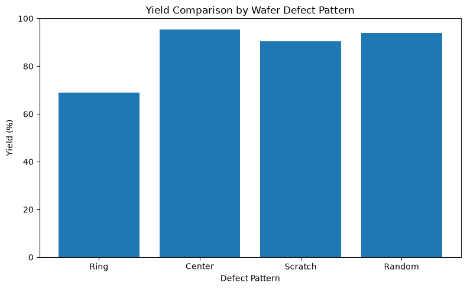

Center Defect Wafer Map

결과 해석 · 공정 관점
중심부에 집중된 불량 패턴을 시각화했습니다. 중심 영역의 반복적인 저수율은 공정 균일도 또는 웨이퍼 위치 의존성을 점검할 단서가 됩니다.
웨이퍼 Die의 PASS/FAIL 상태를 좌표 기반으로 시각화하고, Ring, Center, Scratch, Random 형태의 공간적 불량 패턴을 비교한 프로젝트입니다.
동일한 수율이라도 FAIL Die가 웨이퍼 어디에 분포하는지에 따라 공정 이상 원인 후보는 달라질 수 있습니다.
웨이퍼 가장자리 특정 반경 구간에 FAIL이 집중되는 형태입니다. 이번 실습 데이터에서는 가장 낮은 Yield를 보였습니다.
웨이퍼 중심부에 FAIL이 집중되는 형태로, 중심 영역의 공정 조건 또는 공간적 편차를 확인해야 할 수 있습니다.
FAIL Die가 대각선 또는 특정 방향으로 길게 연결되는 형태로, 선형 방향성을 가진 불량을 시각적으로 확인할 수 있습니다.
특정 위치나 방향성이 뚜렷하지 않고 FAIL Die가 웨이퍼 전체에 불규칙적으로 분포하는 형태입니다.
Edge 쪽에서 반복적으로 FAIL이 집중되는 경우 Edge 영역 공정 균일도나 위치 의존적 공정 조건을 우선적으로 확인할 수 있습니다.
선형 패턴은 Handling이나 CMP와 같은 기계적 접촉 요인을 원인 후보로 검토할 수 있습니다.
Wafer Map을 Tool, Chamber, Recipe, Lot 이력과 연결하면 단순 불량 개수보다 더 구체적인 Root Cause Analysis에 활용할 수 있습니다.
Wafer Die 생성 및 PASS/FAIL 공간 시각화 코드는 GitHub Jupyter Notebook에서 확인할 수 있습니다.
View Notebook on GitHub →Wafer Map 시각화의 실제 실행 결과와 그래프를 확인할 수 있습니다.
실제 분석 결과 보기 →아래 그래프는 해당 Python 노트북에서 실제 실행되어 저장된 출력입니다.
결과 해석 · 공정 관점
중심부에 집중된 불량 패턴을 시각화했습니다. 중심 영역의 반복적인 저수율은 공정 균일도 또는 웨이퍼 위치 의존성을 점검할 단서가 됩니다.

결과 해석 · 공정 관점
선형 형태의 Scratch 불량 패턴을 시각화했습니다. 장비 이송 경로, 척·로봇 접촉, 파티클 이동 경로 같은 기계적 요인을 함께 점검할 수 있습니다.

결과 해석 · 공정 관점
산발적인 Random 불량 패턴을 시각화했습니다. 특정 위치에 국한되지 않은 결함은 공정·환경 변동과 함께 Lot 및 시간 이력을 확인해야 합니다.

결과 해석 · 공정 관점
불량 패턴별 수율을 비교한 결과입니다. 패턴을 수율 영향도와 함께 분류하면 분석 및 조치의 우선순위를 정하는 데 도움이 됩니다.